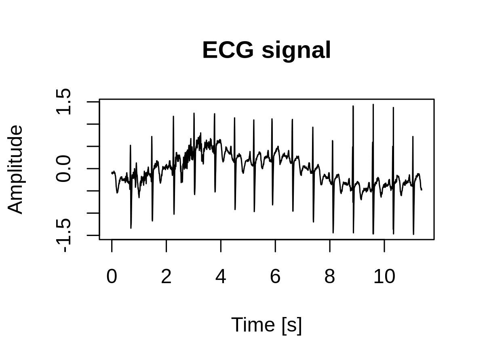
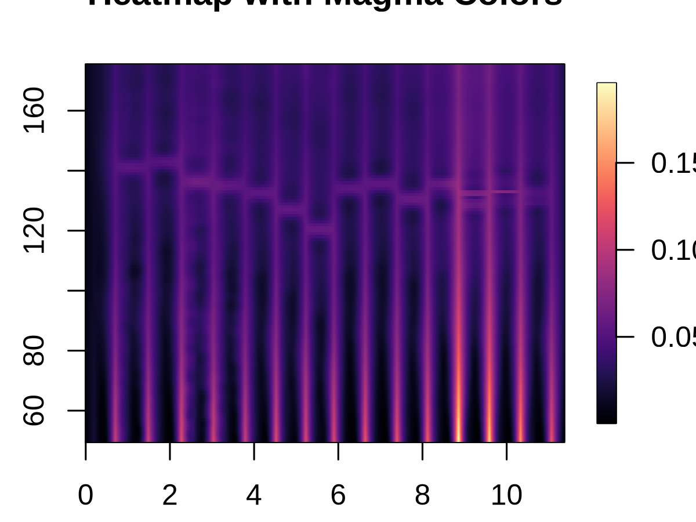
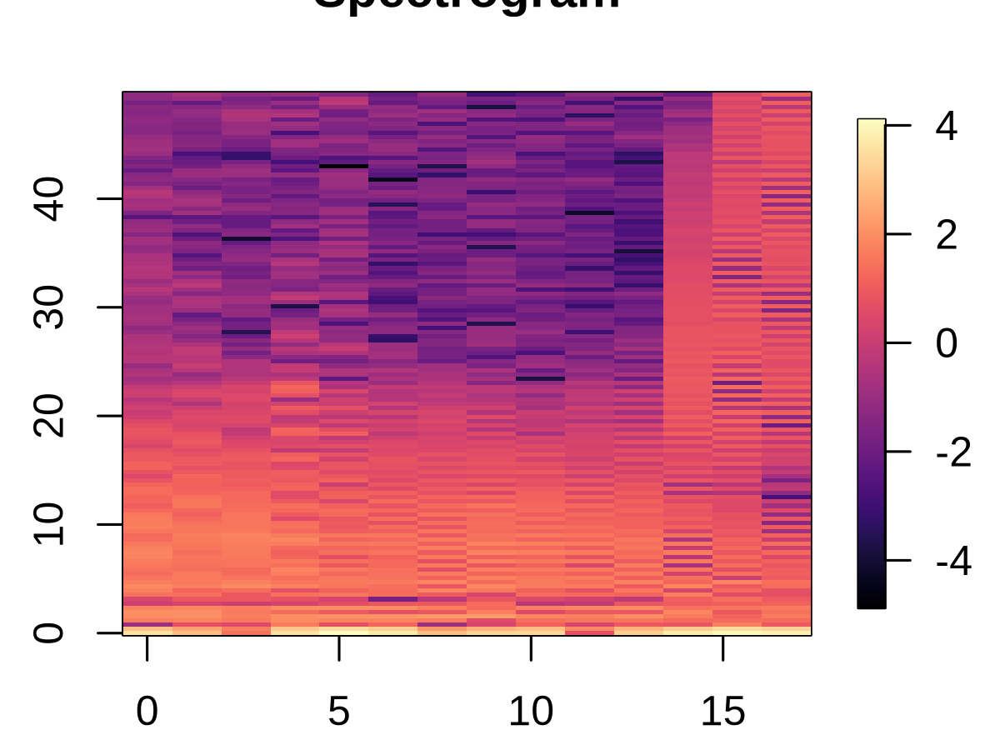

Loading required package: usethis
Downloading GitHub repo guebin/EBT@HEAD
── Attaching core tidyverse packages ───────────────────────────────────────────────────────────────────────────────────────────────────────────────────────────────────────────────────────────────────────────────────── tidyverse 2.0.0 ──
✔ dplyr 1.1.4 ✔ readr 2.1.5
✔ forcats 1.0.0 ✔ stringr 1.5.1
✔ ggplot2 3.5.1 ✔ tibble 3.2.1
✔ lubridate 1.9.3 ✔ tidyr 1.3.1
✔ purrr 1.0.2
── Conflicts ─────────────────────────────────────────────────────────────────────────────────────────────────────────────────────────────────────────────────────────────────────────────────────────────────────── tidyverse_conflicts() ──
✖ dplyr::filter() masks stats::filter()
✖ dplyr::lag() masks stats::lag()
ℹ Use the conflicted package (<http://conflicted.r-lib.org/>) to force all conflicts to become errors
── R CMD build ──────────────────────────────────────────────────────────────────────────────────────────────────────────────────────────────────────────────────────────────────────────────────────────────────────────────────────────────
✔ checking for file ‘/tmp/RtmpuHgN5w/remotes90472302a4357/guebin-EBT-5d28259/DESCRIPTION’
─ preparing ‘ebt’:
✔ checking DESCRIPTION meta-information
─ checking for LF line-endings in source and make files and shell scripts
─ checking for empty or unneeded directories
Omitted ‘LazyData’ from DESCRIPTION
─ building ‘ebt_0.1.0.tar.gz’
Warning message in min(x, na.rm = na.rm):
“no non-missing arguments to min; returning Inf”
Warning message in max(x, na.rm = na.rm):
“no non-missing arguments to max; returning -Inf”
Warning message in min(x, na.rm = na.rm):
“no non-missing arguments to min; returning Inf”
Warning message in max(x, na.rm = na.rm):
“no non-missing arguments to max; returning -Inf”
ERROR: Error in plot.window(...): need finite 'ylim' values
# 첫 번째 그래프: ECG 신호의 선형 플롯plot(t, f, type ='l', main ="ECG signal", xlab ="Time [s]", ylab ="Amplitude")

# 두 번째 그래프: 히트맵 플롯image.plot(x = t, y = mintau:maxtau, z = v_map[1:len, 50:175],xlab ="Time (s)", ylab ="Scale", main ="Heatmap with Magma Colors",col =viridis(256, option ="magma"))

spec <-specgram(f, n =256, Fs = fs, overlap =128)spectrogram <-log(abs(spec$S) +1e-6) time_spec <- spec$tfreq_spec <- spec$f# 세 번째 그래프: 스펙트로그램 플롯image.plot(time_spec, freq_spec, t(spectrogram), xlab ="Time (s)", ylab ="Frequency (Hz)", main ="Spectrogram",col =viridis(256, option ="magma"))

# 스칼로그램 계산 및 플롯wt <-dwt(f, filter ="haar", n.levels =10)# 각 레벨의 웨이브릿 계수들을 동일한 길이로 맞추기scalogram <-do.call(cbind, lapply(wt@W, function(w) approx(w, n =length(t))$y))scales <-seq(1, ncol(scalogram))# 네 번째 그래프: 스칼로그램 플롯par(mar =c(4, 4, 2, 2))image.plot(t, scales, scalogram, xlab ="Time (s)", ylab ="Scale", main ="Scalogram",col =colorRampPalette(c("purple", "green"))(256))# 그래프 배열을 원래 상태로 되돌리기par(mfrow =c(1, 1))